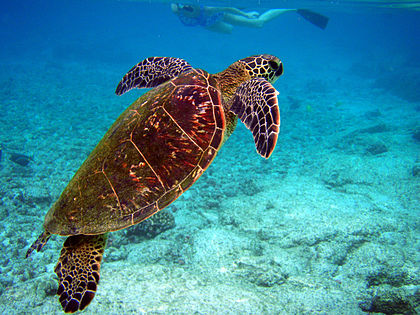
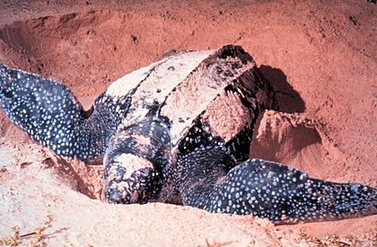

thông tin chi tiết
Rùa biển (Chelonioidea) là một liên họ bò sát biển trong bộ Rùa, sinh sống ở tất cả các đại dương trên thế giới ngoại trừ vùng Bắc Cực. Riêng loài rùa lưng phẳng thì chỉ được tìm thấy ở vùng biển phía bắc Australia.
vai trò
Rùa biển đóng vai trò quan trọng trong hệ sinh thái đại dương và bãi biển. Trong các đại dương, các loại rùa biển, đặc biệt là rùa biển xanh, là một trong số ít các loài động vật ăn cỏ biển (còn có lợn biển) mọc ở các vùng đáy biển. Cỏ biển không được để mọc quá dài, và đây là khu vực cần thiết cho nhiều loài cá và sinh vật biển khác. Thảm cỏ biển mất đi sẽ gây ra một phản ứng dây chuyền, tác động tiêu cực đến đời sống của rất nhiều loài sinh vật biển và con người.
phân loại
Hiện nay bao gồm 7 loài rùa biển của hai họ Cheloniidae và Dermochelyidae. Chúng được phân biệt bởi đầu, hình dạng mai, yếm. Riêng loài rùa da thì không có mai mà thay vào đó là một lớp xương cứng dưới da, loài rùa này có thể dài 1,8 đến 2,1 m và nặng 590 kg lúc trưởng thành.
hình ảnh về 2 họ rùa phổ biến
- Họ Cheloniidae 
- Họ Dermochelyidae 